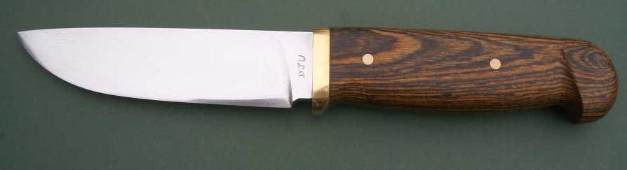
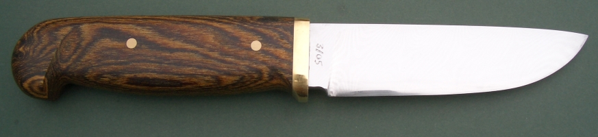
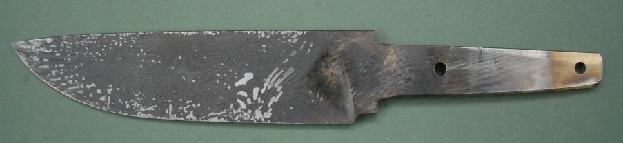
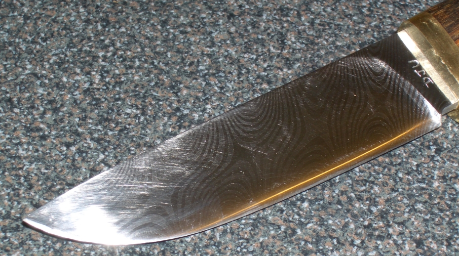
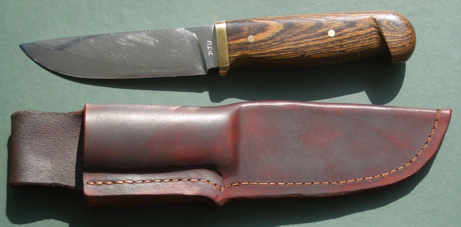

A 72 Layer Star Twist Pattern Sheath Knife
March 2005
I made this knife for myself from mild steel and O1 tool steel. There are 72 layers and I left it thicker than needed after forging, so I would grind into the steel to to expose the star twist pattern. The blade is 4 1/2 inches long, the guard is brass and the handle is Mexican Rosewood.
Here is a picture after hardening:
This shows the pattern better:
Here is the sheath:
